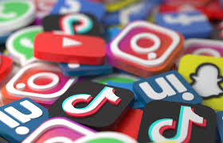

Las redes sociales son de los medios de entretenimiento más importantes del mundo, en los últimos años se han ido popularizando cada vez debido a su fácil acceso y simple uso, esto en mayor medida en las poblaciones más jóvenes ya que a partir de allí pueden descubrir la inmensidad del mundo; permitiendo la comunicación con personas que están en cualquier parte del mundo, facilitando el sentimiento de conexión y aumentando el sentimiento de bienestar social online. Esta conexión en línea puede facilitar también el bienestar en el mundo real. No por nada algunos datos recientes apuntan a 2 mil millones de usuarios en el mundo entero. Ciertamente, las redes sociales y su uso es una cuestión que cada vez va teniendo mayor relevancia. Como resultado a investigaciones realizadas en Estados Unidos se ha observado un uso intensivo de éstas. Al menos entre los jóvenes, se ha evidenciado que, entre los adolescentes estadounidenses, el 45% declara estar casi constantemente en línea. Sin lugar a duda son el recurso más eficiente a la hora de enterarse de lo que sucede a nivel global (ya sea hablando de política, cultura, cuestiones sociales, etc.) Por una parte esto es algo muy beneficioso pues las nuevas generaciones tienen facilidades tales como: ampliar su conexión y comprensión del mundo, esto implica llenar su mente con diversas opiniones, fuentes e ideas; ayudan también a desarrollar habilidades de comunicación e interpersonales, fomentan la creatividad, favorecen el bienestar emocional y mental, entre muchas otras virtudes que traen estas consigo, no sólo todo lo anterior incluso significan un modo de definir o de reafirmar la identidad de cada uno. No obstante, como decíamos, el aumento en la monitorización y la comprobación constante puede desencadenar síntomas relacionados con trastornos psicológicos en algunas personas. Riesgos e Impacto Psicológico: Siguiendo con la idea anterior es posible que, debido al uso excesivo o problemático, es probable que se desarrollen síntomas psicológicos debido a la intensidad en su utilización. En una pequeña población de personas logra provocar comportamientos similares a los que se dan en la adicción. Esto es, una preocupación excesiva asociada a las redes sociales, dirigida por una motivación imperiosa de entrar o utilizar las redes, llegando a afectar a la vida social, la actividad educativa, laboral, personal y/o el bienestar psicológico. Debido a este tipo de comportamientos, el uso problemático de las redes está asociado a menor satisfacción vital y una menor calidad de vida. Asimismo, la búsqueda de estatus digital (invertir un esfuerzo significativo en la búsqueda de la aprobación de otras personas en las redes y en la afirmación de que se tiene un estatus superior) está también asociada a mayor nivel de uso de drogas y conductas sexuales peligrosas. También resta valor a la comunicación cara a cara, el enfrentar las relaciones, reduce la inversión en actividades significativas, aumenta el comportamiento sedentario fomentando más tiempo frente a la pantalla, liderando esta adicción al Internet, ya mencionada, y erosionando la autoestima a través de comparaciones sociales desfavorables.
